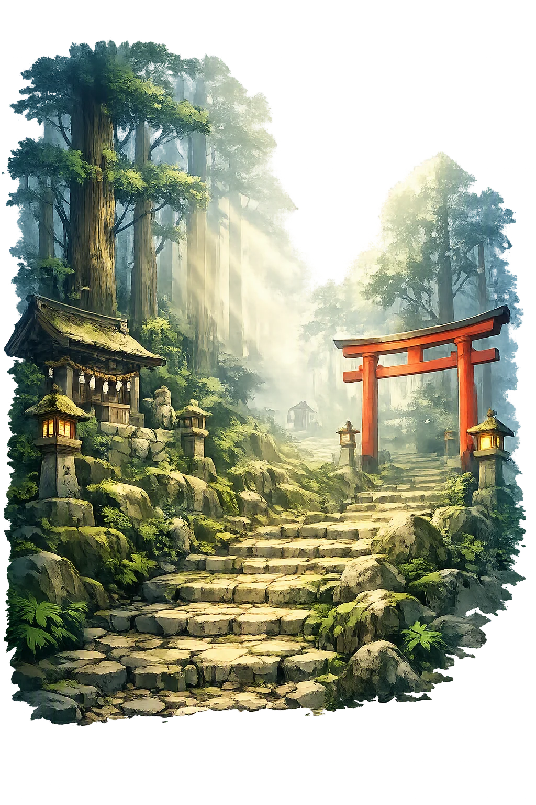
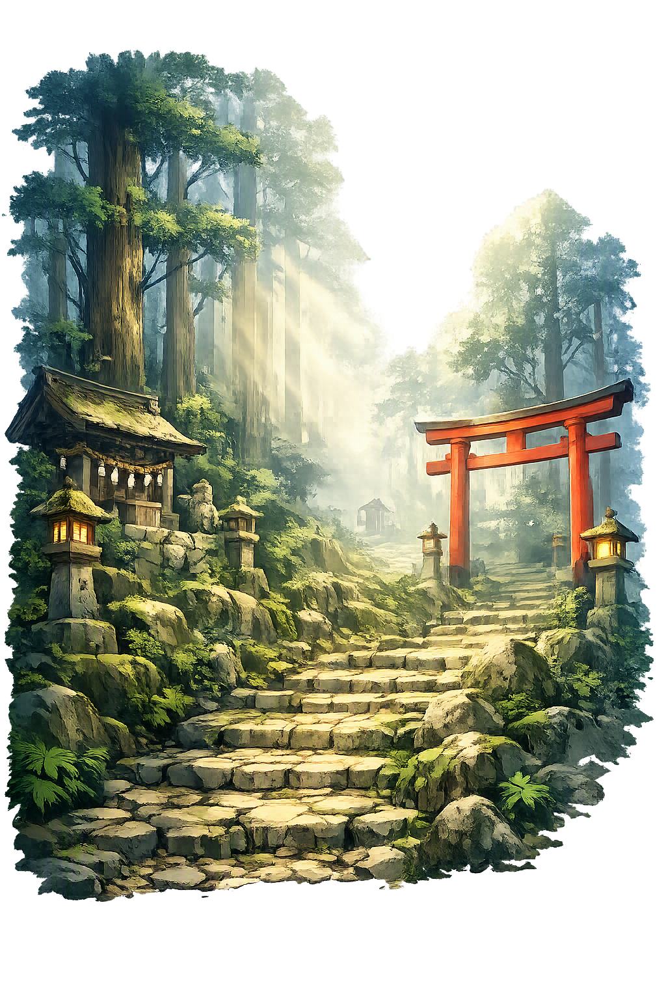

The Living Myth
Sacred Region, Three Shrines · The three Kumano grand shrines

Stories of Kumano
Kumano's mythology blends imperial foundation legend, mountain asceticism, and the medieval fusion of kami and Buddha. Its sources are chronicle, mandala, and ritual text rather than epic, and its stories are walked as much as told: the crow who guided an emperor, the hermits who heard sermons in waterfalls, and the retired sovereigns who came on foot to meet them.
When Emperor Jimmu, the first emperor of the chronicles, led his eastern expedition into the mountains of Kumano, his army lost its way among the peaks. The Kojiki and Nihon Shoki tell that the heavenly gods sent Yatagarasu, a great three-legged crow, to guide him: it flew before the host as a living arrow, and Jimmu emerged from the mountains to claim Yamato. The tale plants the imperial founding inside Kumano's forests and makes the crow — black, solar, three-footed — the sign of divine guidance through wilderness. A thousand years later the mountain shrines still claimed that protection: emperors did not command Kumano, they visited it, and the crow they had followed remained the region's emblem. Guidance through trackless country is Kumano's first gift, and Japan still uses it — the three-legged crow stands on the crest of the national football association.
Kumano became the greatest mountain center of Japan's ascetic tradition, Shugendō. Its legendary founder, En no Gyōja, was said to have wandered the Kii peaks in the seventh century working miracles; by the Heian period the yamabushi — 'those who lie down in the mountains' — walked the Kumano Kodō in straw sandals, performed cold-water ablutions beneath Nachi's falls, and sought visions in the cedar dark. They understood the mountains not as scenery but as a mandala: every peak a deity, every waterfall a sermon. The sources for this layer are late and hagiographic, but the practice they describe is real and documented for over a millennium: to enter Kumano was to enter a realm where the boundary between the human and the divine wore thin, and discipline was the price of crossing it.
From the tenth century the court itself came. Retired Emperor Uda opened the fashion with pilgrimages in the early 900s; by the late Heian age the journey to Kumano had become the highest form of aristocratic devotion, and the retired Emperor Go-Shirakawa is said to have made it some thirty times. These were not retreats but processions — hundreds of riders, boats up the coast, poetry composed at each shrine — yet they ended in mountain humility. Court diaries and shrine records preserve the pattern in detail, and the routes they used still run under the cedars. Pilgrimage was politics performed on foot: every journey bound the imperial house more tightly to the mountains' protection, and broadcast to anyone watching from the pilgrimage roads that the sovereign's power was rooted in the gods of the land.
In the medieval theology of honji-suijaku, 'original ground and local manifestation,' Kumano's kami were declared the local appearances of Buddhas: Hongū's deity was Amitābha, Hayatama's Śākyamuni, Nachi's the waterfall-god Hiryū Gongen, read as an emanation of Kannon. Painted Kumano mandalas show the mountain shrines floating as a Buddhist paradise, the Nachi falls descending like a golden thread of the bodhisattva's compassion. Pilgrims too old or poor to walk could gaze on the mandala and receive the same merit — one famous print added the words, 'those who see this picture will be born in the Pure Land.' The synthesis was not a trick but a theology: the local gods had always been Buddhas in disguise, waiting for the teaching to say so. When the Meiji state forcibly separated the two religions in 1868, Kumano kept both memories — the kami's names and the Buddhas' faces — in a single landscape.
Mountains, Pilgrimage, and Imperial Protection
Kumano is a mountainous region on the Kii Peninsula that has been sacred for over a thousand years. Its three great shrines — the Kumano Sanzan — drew emperors, aristocrats, and commoners on pilgrimage along the Kumano Kodō. Kumano is a place where dense forest, rushing rivers, and waterfalls create a landscape felt to be inhabited by powerful kami and Buddhas.
The three shrines of Hongū, Hayatama, and Nachi form a unified sacred complex.
Ancient pilgrimage routes, now a UNESCO World Heritage site.
Japan's tallest waterfall, worshipped as the dwelling of a kami.
Emperors and retired emperors made repeated pilgrimages to Kumano.
From the original script to the living URL
熊野
The name in its original Japanese form. Kumano (熊野) is attested in the source tradition — “Bear plain”. Its original diacritics and script distinctions carry the full phonetic and orthographic weight of the source tradition.
kumano
The plain kumano form is identical to the Unicode restoration. Because this name is already written in Latin letters, no diacritics, stress, or script information were lost — only capitalization differs.
Kumano
The Unicode restoration does not need to recover lost marks for Kumano. Its value is canonical spelling and consistent cataloguing, not the reconstruction of erased orthography. The domain is readable as-is to both DNS and humanity.
Kumano.com
This restoration is written entirely in ASCII letters — no Punycode encoding stands between Kumano and the DNS. The domain reads identically to machines and to human eyes.
Owned, ideal, and ASCII forms of Kumano
Kumano
Restores 熊野. The full Unicode restoration. kumano.com is not in the PuniCodex collection — it is watched for release; if it drops, this temple upgrades to an owned flagship.
How Kumano was spoken
How Kumano is preserved in writing
A bespoke provenance study for Kumano is being prepared by the PUNICODEX scholarly team.
Contribute scholarly provenance →Kumano asks us to walk. The pilgrimage is not a metaphor but a practice: each step through the cedar forest is a step away from ordinary life and toward encounter — with the kami in the waterfall, with the self under fatigue, with the crow that still guides those who are lost. For a thousand years the route made emperors humble: the most powerful men in Japan removed their shoes and climbed. Kumano's lesson is that the sacred is not a doctrine but a geography, and that renewal is something you approach on foot, season after season, one honest pilgrimage at a time.
Enter Extended Lore